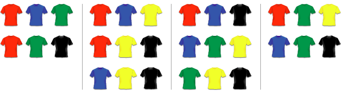

Introduction

Leonhard Euler (1707 – 1783)
Combinatorics is a branch of mathematics which is about counting – and we will discover many exciting examples of “things” you can count.
First combinatorial problems have been studied by ancient Indian, Arabian and Greek mathematicians. Interest in the subject increased during the 19th and 20th century, together with the development of graph theory and problems like the four colour theorem. Some of the leading mathematicians include Blaise Pascal (1623 – 1662), Jacob Bernoulli (1654 – 1705) and Leonhard Euler (1707 – 1783).
Combinatorics has many applications in other areas of mathematics, including Graph Theory, Coding and Cryptography, and Probability.
Factorials
Combinatorics can help us count the number of orders in which something can happen. Consider the following example:
In a classroom there are V.CombA1 pupils and V.CombA1 chairs standing in a row. In how many different orders can the pupils sit on these chairs?
Let us list the possibilities – in this example the V.CombA1 different pupils are represented by V.CombA1 different colours of the chairs.

There are switch(V.CombA1) { case 2: 2; break; case 3: 6; break; case 4: 24; break; case 5: 120; break; } different possible orders. Notice that the number of possible orders increases very quickly as the number of pupils increases. With 6 pupils there are 720 different possibilities and it becomes impractical to list all of them. Instead we want a simple formula that tells us how many orders there are for n people to sit on n chairs. Then we can simply substitute 3, 4 or any other number for n to get the right answer.
Suppose we have V.CombB1 chairs and we want to place V.CombB1==1?'one pupil':V.CombB1==2?'two pupils':V.CombB1==3?'three pupils':V.CombB1==4?'four pupils':V.CombB1==5?'five pupils':V.CombB1==6?'six pupils':'seven pupils' on them. switch(V.CombB1) { case 7: 'There are 7 pupils who could sit on the first chair. Then there are 6 pupils who could sit on the second chair. There are 5 choices for the third chair, 4 choices for the fourth chair, 3 choices for the fifth chair, 2 choices for the sixth chair, and only one choice for the final chair.'; break; case 6: 'There are 6 pupils who could sit on the first chair. Then there are 5 pupils who could sit on the second chair. There are 4 choices for the third chair, 3 choices for the fourth chair, 2 choices for the fifth chair, and only one choice for the final chair.'; break; case 5: 'There are 5 pupils who could sit on the first chair. Then there are 4 pupils who could sit on the second chair. There are 3 choices for the third chair, 2 choices for the fourth chair, and only one choice for the final chair.'; break; case 4: 'There are 4 pupils who could sit on the first chair. Then there are 3 pupils who could sit on the second chair. There are 2 choices for the third chair, and only one choice for the final chair.'; break; case 3: 'There are 3 pupils who could sit on the first chair. Then there are 2 pupils who could sit on the second chair. Finally there is only one pupil left to sit on the third chair.'; break; case 2: 'There are 2 pupils who could sit on the first chair. Next, there is only one pupil left to sit on the second chair.'; break; case 1: 'These is only one choice for the single chair.'; break; } In total, there are
possibilities. To simplify notation, mathematicians use a “!” called factorial. For example, 5! (“five factorial”) is the same as 5 × 4 × 3 × 2 × 1. Above we have just shown that there are n! possibilities to order n objects.

In how many different ways could 23 children sit on 23 chairs in a Maths Class? If you have 4 lessons a week and there are 52 weeks in a year, how many years does it take to get trough all different possibilities? Note: The age of the universe is about 14 billion years.
For 23 children to sit on 23 chairs there are 23! = 25,852,016,738,884,800,000,000 possibilities (this number is too big to be displayed on a calculator screen). Trying all possibilities would take
23!4 × 52 = 124,288,542,000,000,000,000 years.
This is nearly 10 million times as long as the current age of the universe!
Permutations
The method above required us to have the same number of pupils as chairs to sit on. But what happens if there are not enough chairs?
How many different possibilities are there for any Math.min(V.CombC1,V.CombC2) of V.CombC1 pupils to sit on Math.min(V.CombC1,V.CombC2) chairs? Note that Math.max(0,V.CombC1-V.CombC2) will be left standing, which we don’t have to include when listing the possibilities.
Let us start again by listing all possibilities:

To find a simple formula like the one above, we can think about it in a very similar way.'There are '+V.CombC1+' pupils who could sit on the first chair. '+ (((Math.min(V.CombC1,V.CombC2))==2||(Math.min(V.CombC1,V.CombC2))==3||(Math.min(V.CombC1,V.CombC2))==4)?'Then there are '+(V.CombC1-1)+' pupils who could sit on the second chair. ':'')+ (((Math.min(V.CombC1,V.CombC2))==3||(Math.min(V.CombC1,V.CombC2))==4)?'Then there are '+(V.CombC1-2)+' pupils who could sit on the third chair. ':'')+ (((Math.min(V.CombC1,V.CombC2))==4)?'Finally there is one pupil left to sit on the last chair. ':'')+ ((V.CombC1-(Math.min(V.CombC1,V.CombC2))==1||V.CombC1-(Math.min(V.CombC1,V.CombC2))==2||V.CombC1-(Math.min(V.CombC1,V.CombC2))==3)?'We don’t care about the remaining '+(V.CombC1-V.CombC2)+' children left standing. ':'') In total there are
possibilities. Again we should think about generalising this. We start like we would with factorials, but we stop before we reach 1. In fact we stop as soon as we reach the number students without chair. When placing 7 students on 3 chairs their are
7 × 6 × 5 = 7 × 6 × 5 × 4 × 3 × 2 × 14 × 3 × 2 × 1 = 7!4! = 7!(7 – 3)!
possibilities, since the 4 × 3 × 2 × 1 will cancel each other. Again there is a simpler notation for this: 7P3. If we want to place n objects in m positions there are
nPm = n!(n – m)!
possibilities. The P stands for “permutations”, since we are counting the number of permutations (orders) of objects. If m and n are the same, as they were in the problem at the beginning of this article, we have
nPn = n!(n – n)! = n!0!.
To make sense of this we define 0! = 1. Now nPn = n! as we would expect from our solution to the first problem.

Unfortunately you can’t remember the code for your four-digit lock. You only know that you didn’t use any digit more than once. How many different ways do you have to try? What do you conclude about the safety of those locks?
There are 10 digits (0, 1, …, 9) and each one appears at most once. The number of orderings of these digits is 10P4 = 5040. It would take a very long time to test that many combinations, so 4-digit locks are very safe.
Combinations
Permutations are used when you select objects and care about their order – like the order of children on chairs. However in some problems you don’t care about the order and just want to know how many ways there are to select a certain number of objects from a bigger set.
In a shop there are five different T-shirts you like, coloured red, blue, green, yellow and black. Unfortunately you only have enough money to buy three of them. How many ways are there to select three T-shirts from the five you like?
Here we don’t care about the order (it doesn’t matter if we buy black first and then red or red first and then black), only about the number of combinations of T-shirts. The possibilities are

so there are 10 in total. If we had calculated 5P3 = 60, we would have double-counted some possibilities, as the following table shows:

With permutations, we count every combination of three T-shirts 6 times, because there are 3! = 6 ways to order the three T-shirts. To get the number of combinations from the number of permutations we simply need to divide by 6. We write
5C3 = 5P33! = 606 = 10.
Here the C stands for “combinations”. In general, if we want to choose r objects from a total of n there are
nCr = nPrr! = n!r! (n – r)!
different combinations. Instead of nCr mathematicians often write nCr = (nr), like a fraction in brackets but without the line in between. (To simplify typesetting we will continue using the first notation inline.)

(a) There are 10 children in your class but you can invite only 5 to your birthday party. How many different combinations of friends could you invite? Explain whether to use combinations or permutations.
(b) At a party there are 75 people. Everybody shakes everybody’s hand once. How often are hands shaken in total? Hint: How many people are involved in shaking hands?
(a) The number of combinations of friends you can invite is 10C5 = 252. We used combinations because it doesn’ matter which order we invite the friends in, on which ones we invite.
(b) You want to find the number of all possible pairs of party guests. This is simply 75C2 = 2775. (That’s a lot of handshakes!)
Combinatorics and Pascal’s Triangle
Let us now calculate some values of nCr. We can start with 0C0. Then 1C0 and 1C1. Then 2C0, 2C1 and 2C2. Than 3C0, 3C1, 3C2 and 3C3. Let us write down the results in a table:
| 0C0 =1 | |||||||||||
| 1C0 =1 | 1C1 =1 | ||||||||||
| 2C0 =1 | 2C1 =2 | 2C2 =1 | |||||||||
| 3C0 =1 | 3C1 =3 | 3C2 =3 | 3C3 =1 | ||||||||
| 4C0 =1 | 4C1 =4 | 4C2 =6 | 4C3 =4 | 4C4 =1 | |||||||
| 5C0 =1 | 5C1 =5 | 5C2 =10 | 5C3 =10 | 5C4 =5 | 5C5 =1 | ||||||
This is exactly Pascal’s triangle which we explored in the article on sequences. It can be created more easily by observing that any cell is the sum of the two cells above. Hidden in Pascal’s triangle there are countless patterns and number sequences.

Now we also know that the rth number in the nth row is also given by nCr (but we always have to start counting at 0, so the first row or column is actually the zeroth row). If we apply what we know about creating Pascal’s triangle to our combinations, we get
(nr) + (nr + 1) = (n + 1r + 1) .
This is known as Pascal’s Identity. You can derive it using the definition of nCr in terms of factorials, or you can think about it the following way:
We want to choose r + 1objects from a set of n + 1objects. This is exactly the same as marking one object of the n+ 1, to be called X, and either choosing X plus r others (from the remaining n), or not choosing X andr + 1others (from the remaining n).
Many problems in combinatorics have a simple solution if you think about it the correct way, and a very complicated solution if you just try to use algebra…
A greengrocer on a market stocks a large number of n different kinds of fruit. In how many ways can we make up a bag of r fruits? Note that r can be smaller, equal or bigger than n.

Note that with r ≤ n there are nCr ways to select one fruit from each kind. However we are also allowed to take more than one fruit of each kind, for example two apples, one strawberry and one banana.
We can represent any valid selection of fruit by a string of stars and bars, as shown in this example:
| ★★★ | | | ★★ | | | | | ★★ | | | ★ | |
| 3 of type 1 | 2 of type 2 | 0 of type 3 | 2 of type 4 | 1 of type 5 |
In total there are r stars (representing the r fruit we are allowed to take) and there are n – 1 bars (dividing the n different kinds of fruit). This makes r + n – 1 places in total. Any ordering of r stars and n – 1 bars corresponds to precisely one valid selection of fruit.
Now we can apply our combinatorial tools: there are r + n – 1 places and we want to choose n – 1 of them to be bars (all the others are stars). That there are exactly (r + n – 1)C(n – 1) possibilities to do that!
Suppose there are five kinds of fruit and we want to take ten items. From what we have calculated above, there are
(10 + 5 – 1)C(5 – 1) = 14C4 = 24,024
possibilities. Think about that next time you go shopping!
Combinatorics and Probability
Combinatorics has many applications in probability theory. You often want to find the probability of one particular event and you can use the equation
P(X) = probability that X happens = number of outcomes where X happenstotal number of possible outcomes
You can use combinatorics to calculate the “total number of possible outcomes”. Here is an example:
Four children, called A, B, C and D, sit randomly on four chairs. What is the probability that A sits on the first chair?
We have already shown that in total there are 24 ways to sit on four chairs. If you look back at our solution, you will also find that A sits on the first chair in six of the cases. Therefore
P(A sits on the first chair) = number of outcomes where A sits on the first chairtotal number of possible outcomes = 624 = 14.
This answer was expected, since each of the four children is equally likely to sit on the first chair. But other cases are not quite as straightforward…
(a) A postman has to deliver four letters to four different houses in a street. Unfortunately the rain has erased the addresses, so he just distributes them randomly, one letter per house. What is the probability that every house gets the right letter? (☆ What is the probability that every house gets a wrong letter?)
(b) In a lottery you have to guess 6 out of 49 numbers. What is the probability that you get all of them right? If submit 100 guesses every week, how long on average will it take you to win?
(a) There are 4! = 24 ways to randomly distribute the letters, and only one way to get all of them right. Thus the probability that every letter is delivered to the right house is 1 / 24 = 0.0417 = 4.17%.
To find the probability that every letter gets delivered to the wrong house is a bit more difficult. It is not simply 1 – 0.0417, since there are many cases in which one or two, but not all houses get the right letter. In this simple case, the easiest solution would be to write down all 24 possibilities. You will find that in 9 out of the 24 cases every house gets a wrong letter, which gives a probability of 0.375 = 37.5%. If there more too many houses to write down all possibilities, you can use an idea called the Inclusion Exclusion principle.
(b) There are 49C6 = 10,068,347,520 possible outcomes of the lottery, so the probability of getting the right solution is 1 / 49C6 = 0.0000000001.
On average it will also take 10,068,347,520 attempts to win. If we submit 100 guesses every week this corresponds to 100,683,475 week, which is the same as 1,936,200 years. The lesson to learn: don’t play lotto!